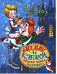

Взрослые часто удивляются: почему детям так нравится Карлсон? Противный, капризный, невоспитанный, вечно требующий вкусной еды... Этот ряд можно продолжать до бесконечности. Может, потому, что каждое мгновение он готов проказничать, и не всегда невинно? Дурное влияние улицы (в данном случае - крыши) всегда привлекательно для домашних детей? Думается, это совсем не так. Ведь Карлсон для Малыша - не отпетый хулиган и заводила в рискованных играх, а скорее одинокий ребенок, который нуждается в ласке, участии и семейном тепле. Малыш, несмотря на свой маленький возраст, очень хорошо это чувствует. Он жалеет Карлсона и прощает ему многое. Эта великая книга учит ребенка любви и терпимости к тем, кого любить трудно.